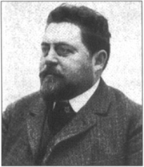

Listen to Part 1:

Gaston Leroux là người Pháp. Ông sinh ra tại Paris vào ngày 6 tháng 5 năm 1868. Mẹ và cha của ông sở hữu một cửa hàng quần áo tại Paris. Leroux là một cậu bé hoạt bát. Ông thích văn học và sân khấu. Đôi khi, ông gặp rắc rối với cha mẹ và với các viên chức thành phố.
Leroux học để trở thành một luật sư nhưng ông không thích công việc này. Sau đó, cha ông qua đời và Leroux nhận được một triệu franc. Người thanh niên đã tiêu hết toàn bộ số tiền trong vòng sáu tháng!
Năm 1890, Leroux trở thành phóng viên. Ông làm việc cho tờ báo L’Echo de Paris. Ông đã viết về các phiên tòa và tội phạm. Ông cũng viết các bài báo cáo về các vở kịch trong các nhà hát. Các báo cáo của ông rõ ràng và hấp dẫn. Ông đã trở nên thành công. Sau đó, ông là nhà báo cho tờ báo Paris Le Matin.
Leroux là một người đàn ông lớn, nặng nề. Ông có bộ râu đen rậm. Ông thích quần áo đẹp và đồ ăn thức uống ngon.
Từ năm 1894 đến 1906, Gaston Leroux đã đi đến nhiều nước. Ông đã viết về các cuộc chiến tranh và cách mạng. Ông đã đến thăm những nơi nguy hiểm. Nhiều lần, ông phải mặc những bộ quần áo kỳ lạ và thay đổi kiểu tóc. Sau đó, ông đã rời khỏi những nước này một cách an toàn.
Leroux bắt đầu viết truyện và kịch vào những năm 1900. Năm 1907, ông ngừng đi du lịch. Ông không làm việc với tư cách là một nhà báo. Ông không viết cho các tờ báo. Ông đã viết kịch, thơ và truyện. Ông đã viết truyện phiêu lưu, truyện lãng mạn, truyện trinh thám và truyện kinh dị. Một số truyện của ông là: Bí ẩn trong căn phòng màu vàng (1907), Mùi nước hoa của người phụ nữ mặc đồ đen (1911), Người đàn ông trở về từ cõi chết (1916), Bí mật của đêm (1914) và Cô dâu của mặt trời (1915). Câu chuyện nổi tiếng nhất của Leroux, Bóng ma nhà hát Opera, được xuất bản năm 1911.
Leroux mất tại Nice, Pháp vào ngày 16 tháng 4 năm 1927. Ông hưởng thọ 59 tuổi.